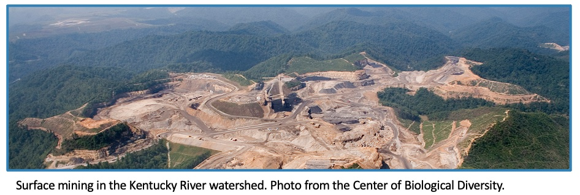
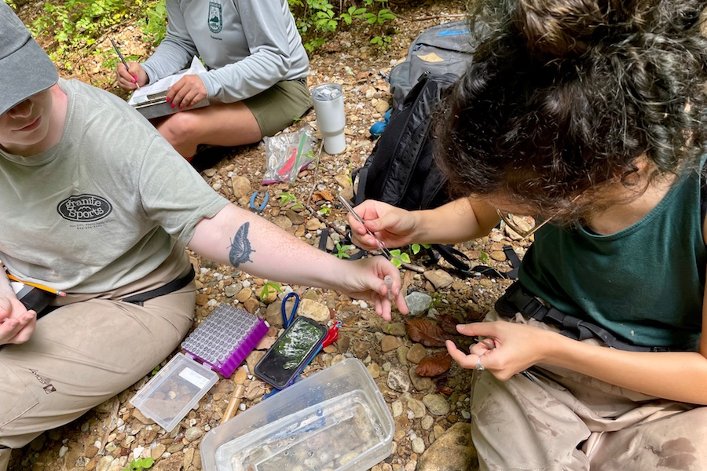
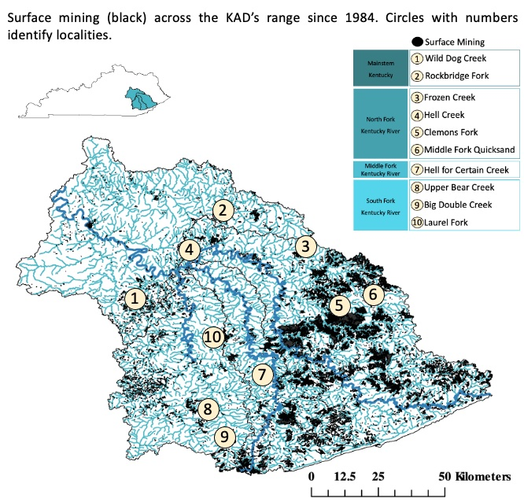
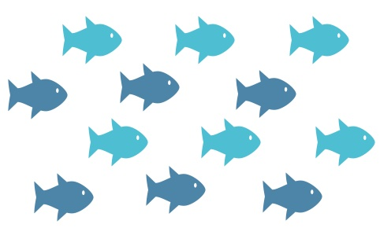

Current Resarch
The effects of surface mining on population connectivity and genetic diversity of Etheostoma sagitta spilotum, the Kentucky Arrow Darter
Johansen Lab, Austin Peay State University
Clarksville, Tennessee
Anthropogenic habitat fragmentation contributes to reduced dispersal and gene flow among populations, and often leads to reduced population size and genetic diversity. Small, benthic, freshwater fishes are especially vulnerable to habitat fragmentation. The Kentucky Arrow Darter (KAD), Etheostoma sagitta spilotum , is endemic to headwater streams in the Upper Kentucky River Basin (right image). It is listed as threatened due to declines in occurrence and abundance from extensive habitat degradation and fragmentation, particularly from mining, across its range.
Historically, KAD experienced gene flow across its range, but populations are currently isolated with signatures of recent reductions in genetic diversity, likely due to recent habitat degradation and fragmentation. The influence of specific land uses or fragmentation events on population connectivity has not been tested.

1)Determine if diversity and connectivity of KAD populations have changed over past 6 years 
1)DNA extracted from fin clips taken at 10 sites (left image) 
-Total of 150 fin clips collected from 8 of 10 sites 
-Complete tissue collections and genotype data First Place Suttkus Poster Presentation Award at Southeastern Fisheries Council annual conference in Columbus, Georgia.
Introduction
Previous Studies

Objectives
2)Evaluate if genetic diversity and population connectivity are correlated with past and ongoing mining
Methods
2)Genotype data collection ongoing for 11 microsatellite loci
3)Estimated genetic diversity metrics will be compared to those of Blanton et al. (2019)
4)Surface mining data summarized from SkyTruth3 and evaluated by year
5)Mining data used to build resistance models in R to determine impact of mining on population connectivity and genetic diversity
Preliminary Results
-Genotype data generated for 32 individuals with average of 5 alleles per locus
-Surface mining expanded across KAD range since 1985
-North Fork Kentucky River has most mining activity
-South Fork Kentucky River has least amount of mining due to National Forest land
-Surface mining most common in headwaters of the Kentucky River Watershed
Future Directions
-Estimate current genetic diversity and population connectivity and compare to previous study
-Generate resistance maps to evaluate how KAD genetic diversity and population connectivity are influenced by mining
-Incorporate additional spatial variables into resistance maps that may influence population connectivity and genetic diversity
Research News